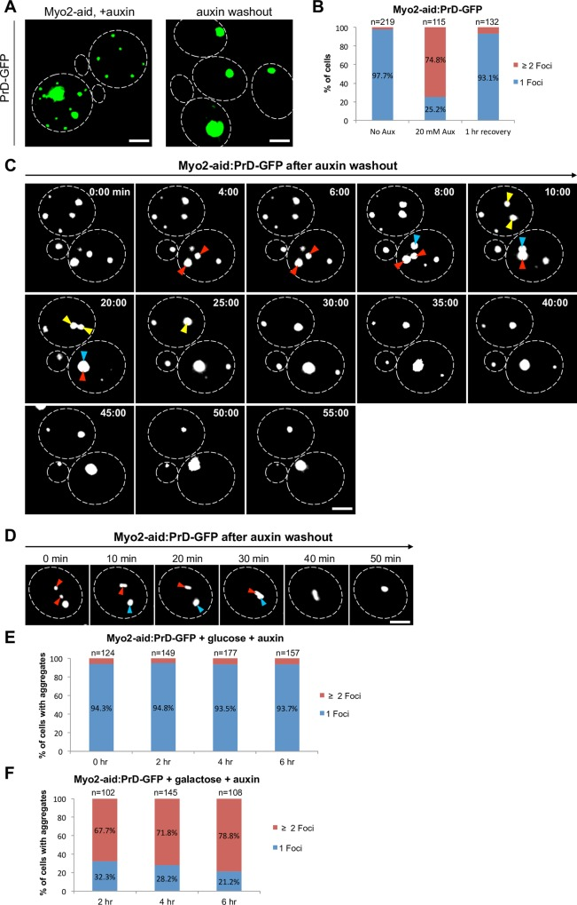

insoluble protein deposit
A perivacuolar cytoplasmic protein inclusion characterized in budding yeast that accumulates poorly mobile, insoluble protein aggregates, including amyloid and prion cargo, at a site distinct from nuclear and juxtanuclear quality-control deposits. [DOI:10.1038/nature07195]

NCBITaxon:4932) · Rajesh Kumar, Peter P. Nawroth and Jens Tyedmers (2016), Figure 3; CC BY 4.0, via PubMed Central. Unmodified. · CC_BY_4_0 · source: PMC PMC5045159.1 pgen.1006324.g003 · DOI:10.1371/journal.pgen.1006324Synonyms: IPOD
Part of: GO:0005737 — cytoplasm (no local record)
Components
| Component | Type | Part of / acts on | Grounding | Genes | Stoichiometry | Essential | Role |
|---|---|---|---|---|---|---|---|
| heterogeneous IPOD protein aggregate cargo | Other | part of | Reviewed label only (reviewed name; no accession asserted) | UNKNOWN | Deposited insoluble protein material, including prion and amyloid substrates; no single cargo protein is asserted as an invariant scaffold.
| ||
| Hsp104-type disaggregase | Protein | acts on | Reviewed label only (reviewed name; no accession asserted) | HSP104 | UNKNOWN | Chaperone associated with assembled IPOD material. In the tested PrD-GFP chase, Hsp104 inhibition prevents slow deposit decay and cargo turnover. This post-assembly intervention does not establish a universal de novo assembly requirement.
|
Organism-specific protein examples
Named proteins in which each component's role was established, with the organism the evidence comes from. The component above is the taxon-agnostic family; these are the specific entries behind it.
Hsp104-type disaggregase
| Accession | Protein | Gene | Organism | Entry |
|---|---|---|---|---|
UniProtKB:P31539 | Heat shock protein 104 | HSP104 | Saccharomyces cerevisiae S288C (NCBITaxon:559292) | REVIEWED |
Role and evidence (3 references)Reviewed reference-sequence example of yeast Hsp104; not a reassignment of 74D-694 experiments to S288C.
| ||||
Canonical examples
NCBITaxon:4932Saccharomyces cerevisiae — IPOD cargo recruitment and turnover were studied in 74D-694 derivatives carrying PrD-GFP. Methods distinguish galactose-inducible reporter strains from constitutive reporter strains lacking the endogenous SUP35 prion domain. No exact strain taxon is inferred from reference-protein metadata. [DOI:10.1371/journal.pgen.1006324]NCBITaxon:559292Saccharomyces cerevisiae S288C — Reference-sequence provenance for the reviewed Hsp104 example, not an assertion that the imaged 74D-694 derivatives are S288C. [UniProtKB:P31539]
Functions
- spatial sequestration of insoluble protein cargo — Concentrates selected aggregate substrates in a perivacuolar deposit. The entry does not assign universal protection, toxicity or obligatory prion nucleation to every IPOD.
DOI:10.1038/nature07195Figures 2 and 4 distinguish amyloid-cargo localization and poorly exchanging IPOD material from the juxtanuclear compartment.DOI:10.1371/journal.pgen.1006324Figures 2, 3 and 5 show reversible defects in accumulation of PrD-GFP at one central IPOD after transport perturbations.
- conditional release of sequestered cargo for turnover — In the PrD-GFP chase, deposits can slowly lose cargo through Hsp104-dependent processing, with subsequent turnover partly sensitive to proteasome inhibition. This is not evidence that all IPOD cargo is recoverable or that deposition is an obligatory degradation intermediate.
DOI:10.1371/journal.pgen.1006324Figure 6C-G and Results separate slow Hsp104-sensitive deposit decay from downstream, partially MG132-sensitive turnover.
Mechanism graphs
Recruitment of PrD-GFP to a central IPOD (ASSEMBLY)
| Subject | Predicate | Object | Evidence |
|---|---|---|---|
| Induced PrD-GFP amyloid cargo | accumulates at | Insoluble protein deposit |
|
| Myo2 depletion during cargo induction | impairs cargo recruitment to | Insoluble protein deposit |
|
| Tpm1 loss with Tpm2 depletion | impairs cargo recruitment to | Insoluble protein deposit |
|
| Sec18 depletion during cargo induction | impairs cargo recruitment to | Insoluble protein deposit |
|
| Restoration of Myo2 after auxin washout | restores cargo accumulation at | Insoluble protein deposit |
|
| Restoration of Sec18 after auxin washout | restores cargo accumulation at | Insoluble protein deposit |
|
Hsp104-sensitive processing of deposited PrD-GFP (FUNCTION)
| Subject | Predicate | Object | Evidence |
|---|---|---|---|
| PrD-GFP-containing IPOD | can undergo | Gradual liberation of deposited PrD-GFP |
|
| Hsp104-type disaggregase | supports | Gradual liberation of deposited PrD-GFP |
|
| Guanidinium treatment during the chase | inhibits | Hsp104-type disaggregase |
|
| Gradual liberation of deposited PrD-GFP | permits | Turnover of released PrD-GFP |
|
| MG132 treatment during the chase | reduces | Turnover of released PrD-GFP |
|
Discussions
- INTERPRETATION (RESOLVED): Keep IPOD separate from PAS, INQ/JUNQ and a generic inclusion body. Shared proximity or substrate overlap does not establish exact structure identity.
- CURATION_TODO (OPEN): Resolve exact source-neutral component groundings and native cargo inventories. A heterogeneous aggregate class and narrower Hsp104-type class cannot inherit arbitrary broader family identities.
- INTERPRETATION (RESOLVED): Distinguish transport machinery and neighboring PAS components from IPOD constituents. Recruitment defects, pulldown association and partial colocalization do not establish stable composition.
- INTERPRETATION (RESOLVED): Do not equate IPOD with mandatory autophagic disposal or irreversible sequestration of every cargo. The Ubc9ts recovery assay and the PrD-GFP chase test different substrates and conditions.
- INTERPRETATION (RESOLVED): Do not assert obligatory IPOD localization for all prion formation. Perturbation results depend on genotype and stress context.
- CURATION_TODO (OPEN): Resolve native assembly scaffolds, broader prevalence and condition-specific material properties. Reporter deposition in one species does not establish a constitutive structure in every lineage or invariant dimensions.
Evidence
DOI:10.1038/nature07195Original IPOD identity, perivacuolar localization, aggregate mobility and Hsp104 association in yeast.DOI:10.1371/journal.pgen.1006324Primary intervention study of cargo recruitment, recovery and slow Hsp104-sensitive processing.DOI:10.1371/journal.pgen.1011194Figure 6A limits claims that IPOD localization is obligatory for oxidant-induced prion formation in every genetic background.
Curation history
2026-10-05T07:22:50Zcodex · CREATED_RECORD — Scaffolded by scripts/new_record.py2026-10-05T07:25:34Zcodex · EXPANDED_RECORD — Added yeast-scoped IPOD composition, source-bounded recruitment and turnover graphs, interpretation boundaries, reference metadata and an inspected CC BY 4.0 primary figure.
Source: data/structures/inclusion/insoluble_protein_deposit.yaml